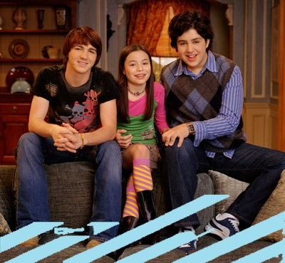

Datos Curiosos
Su primer nombre no es Drake, sino Jared.
"I Found a Way", la canción del intro, fue escrita por Drake Bell y Michael Corcoran en el 2003

Drake Bell, Josh Pec y Miranda Cosgrove fueron los únicos tres actores que aparecieron en uno y cada uno de los episodios
El nombre de la madre biológica de Josh y del padre biológico de Megan y Drake nunca se mencionó en el show.